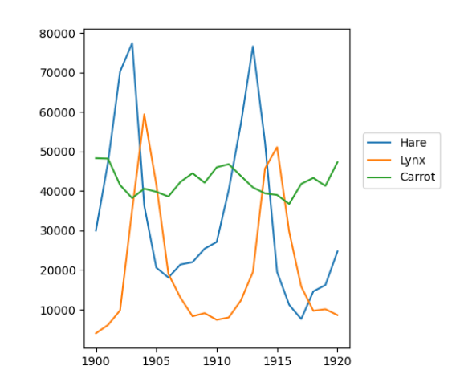

np.where() and its indexing counterpart
lab8.py
Then, in lab8.py:
populations.txt to a variable called data using np.loadtxt().carrot/hare and hare/lynx and assign them to c_h and h_l, respectively.output_data and make three columns containing year, c_h and h_l vectors, respectively.output_data variable in a file called output_data.txt.